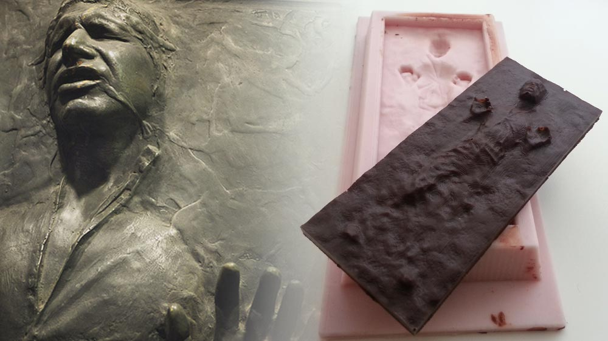

Week 9
Molding and Casting

This week's assignment is to design a 3D mold, machine it, and cast parts from it.ts as possible.
Design
I’m a fan of “Star Wars”, for this reason I decided to create a mold of a character of the saga: Han Solo imprisoned in Carbonite. After a brief search, I found the scanning of "Han" in a fan forum. I used Rhino to correct the 3d model and tried to simplify the complex surface.
To draw the 3d mold I had to follow a few guidelines:
- Draw it in positive (in my case I did an hard mold to create a soft mold and cast the final object, but is possible did directly a negative hard mold to create the object);
- Maintain a margin of 5 mm from each edge (including top and bottom), and between the outer wall and the object;
- give to the walls an inclination of 15° to not break the mandrel or the tool;
- Draw the “extract Facilitator” of the soft mold: a small part of extra material at the edge;
- I used one face, but if you have double side, remember to draw the union markers and ventilation system.
Once we have ready our 3D design it is necessary to export the object as .stl format.
Hard Mold
The process to use the milling machine was similar at the procedure as milling boards. I did the set up of the machine first and then I prepared the files into the Software Modela player 4. My idea was to create a mold that makes molds. I used the modeling wax to create the hard mold: it’s a chip material and easy to use.
To make the Hard mold I use the following tools, materials and procedures:
- I opened the .stl file in Modela player 4;
- I selected the material (modeling wax) and set up the machine, the origin point (0,0,0) change the position from CAD (Computer-Aided Design) to CAM (Computer-Aided Manufacturing);
- I selected the first process of milling: Roughing; I chose the tool 3 mm Square for cutting (remove material) and I used the standard cutting set up dedicate for modeling wax. Then the software calculated and saved the process;
- I selected the second process of milling: Finishing; This process will remove all the steps created by the larger tool and make more refined object. I chose the tool 1 mm Ball for cutting and I used the standard cutting set up dedicate for modeling wax. Then the software calculated and saved the process;
- After checking the path tool, the virtual preview of the milling, set the x-y-z of machine and placed the piece of wax in the machine I sent the files to mill;
- When the first process was done the software stopped the milling to give me the time to change the tool;
- When all done, I collected wax (it can be used for another job) and controlled the final object.
It took a long time for cutting, would be better to further simplifying the surface to reduce the milling time.
Soft Mold
I used products of Smooth-On: Smooth-Sil 940
To make the Soft mold I use the following tools, materials and procedures:
- First you need to prepare all material that will be used to make the soft mold, including use gloves and glasses is it necessary;
- Applying a Release Agent - To ensure thorough coverage, lightly brush the release agent with a soft brush over all surfaces of the model. Follow with a light mist coating and let the release agent dry for 30 minutes;
- Before you begin, pre-mix Part B thoroughly to re-disperse pigments that may have settled;
- Using a gram scale, dispense required amounts of parts A and B (10:1) into a mixing container and mix for 3 minutes. Scrape the sides and bottom of the container several times;
- After mixing parts A and B, vacuum degassing is recommended to eliminate any entrapped air. Vacuum material for 2-3 minutes, making sure that you leave enough room in container for product expansion. I could not did it before the pour the mixture, but I degassing the soft mold slamming it against the desk for 5 minutes;
- For best results, pour your mixture in a single spot at the lowest point of the containment field. Let the rubber seek its level up and over the model. A uniform flow will help minimize entrapped air. The liquid rubber should level off at least 1/2” (1.3 cm) over the highest point of the model surface;
- Allow rubber to cure as prescribed at room temperature (73°F/23°C) before demolding for 24 hours. Do not cure rubber where temperature is less than 65°F/18°C;
- After curing at room temperature, expose the rubber to 176°F/80°C for 2 hours and 212°F/100°C for one hour. Allow mold to cool to room temperature before using;
- Wash it and it's ready to use.
Cast
I and the other students of the Fab Academy in Frosinone, decided to use the chocolate for our casting. We called an important local pastry and chocolate factory “Dolcemascolo” to ask for cooperation. We Showed this fabrication technique and they invited us to their laboratories. We were lucky enough to see an expert making chocolate. They used our molds to make chocolate bars. Was an amazing experience that I hope will happen again. Thanks a lot “Dolcemascolo”.
I used my soft mold also to create small ice statues for theme parties and when I will have a bit 'of time also I will use the liquid plastic.
Programs: Modela player 4, Rhino.
Machinery: Roland SRM-20.